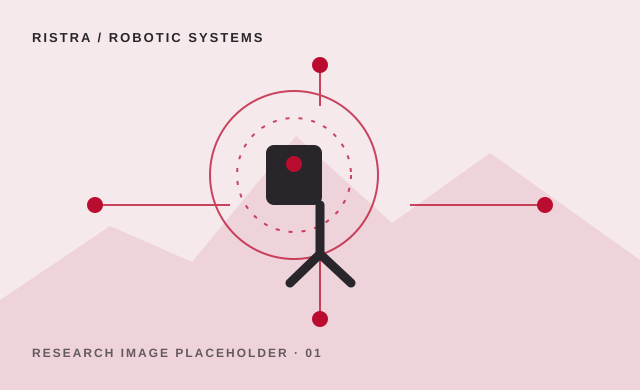
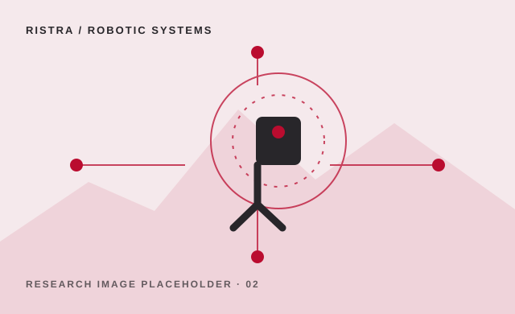

01 / EMBODIED INTELLIGENCE
Robotic systems
Research on robots that sense, move, and interact in changing real-world environments. Replace this sample summary with the center’s specific projects and outcomes.
- Mobile and field robotics
- Perception and manipulation
- Human-robot interaction

